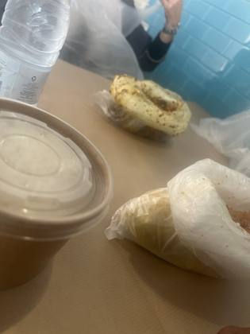
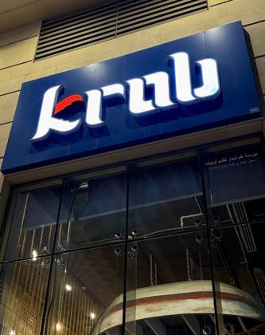
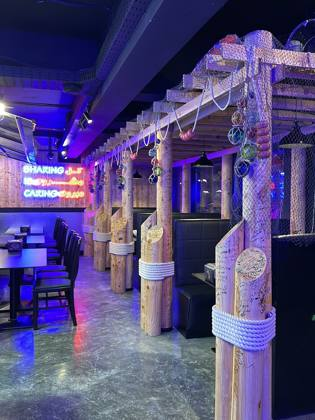
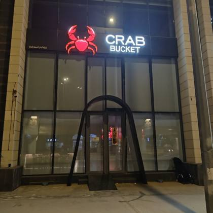

Saudi Arabia
4 restaurants · 23 photos
NZ/AU ?

Sea BucketMedina · 8NZ/AU ?
KrabDhahran · 6NZ/AU signals
The Boiling CrabRiyadh · 5NZ/AU ?
Crab BucketAl Hofuf · 4Every boil listing found · 8
Google Maps listings whose name says boil / crawfish / Cajun / crab etc. Swept 20 Oct 2026. Not all verified as bag boils; tap to open the listing.
Al Hufuf · 1
- كراب بوكيت Crab Bucket Al Hufuf · ★4.5 (2621)
Al Mubarraz · 1
- Crab Bucket Al Mubarraz · ★4.4 (2325)
Dhahran · 1
- Krab Dhahran, Opens 11 AM · ★4.7 (546)
Jeddah · 1
- The Boiling Crab Jeddah, Opens 2:30 PM · ★4.7 (2,773)
Khobar · 1
- كراب بوكيت Crab bucket Khobar, شارع بشار بن برد، 34447,العليا ، الخبر 34447 · ★4.6 (254)
Medina · 1
- Sea Bucket سي بوكيت Medina · ★4.2 (971)
Riyadh · 2
- The Boiling Crab Riyadh, 7089 طريق ابي بكر الصديق، الندى، الرياض 13317،، · ★4.6 (5,541)
- ذا بويلينق كراب | 🦀 The Boiling Crab Riyadh, Opens 2:30 PM · ★4.8 (403)